Production Tutorial / Agent Simulation Studio
把 Agent Loop 从黑箱变成可训练的工作台
这里不是仿真器链接集合，而是一条完整学习路径：先用动态模拟器建立循环直觉，再用脚本练习把命令和配置跑熟，最后用 Trace Prompt 看清一次 Claude Code 请求是如何被拼出来的。
trace system + tools + runtime reminder
replay prompt → tool_use → tool_result
learn choose the smallest useful simulator
Decision Guide
先按问题选入口
生产级教程最重要的不是把内容堆满，而是让学习者在 10 秒内知道自己该点哪里。
Claude Pet SVG Wall
一面会让教程有记忆点的 SVG 角色墙
这些 pixel-style SVG 来自本地 `claude-pets-svg` 素材，放进 Loop Lab 后可以作为章节角色、状态徽章或学习路径视觉资产。


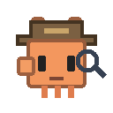
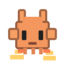
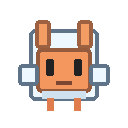
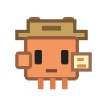
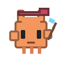
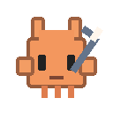
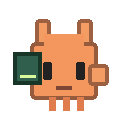
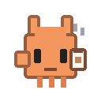
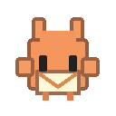
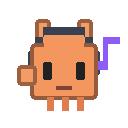
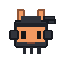
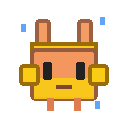
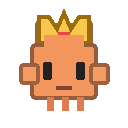
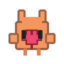
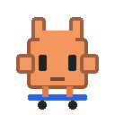
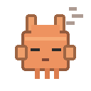
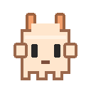
Simulation Paths
三种在线仿真器
每个入口都对应一种认知负载：先看循环，再练脚本，最后拆 prompt 请求。
Learning Runway
建议按这条路线学
这个顺序能让概念、操作和源码之间互相托住，不会一下子掉进细节里。
用 Agent Loop 模拟器跑一遍完整 turn。
用 Script Insight 把命令、配置、测验跑起来。
用 Trace Prompt 读懂真实请求里的层级。
用 SSE 联调理解仿真和真实运行时的接口。
Mechanism Pages
配套机制页
这些页面补足控制台、任务状态、Loop 机制和连接器运行时，让仿真不只停留在视觉层。
Local Event Stream
本地 SSE 联调
GitHub Pages 只能展示静态页面；要接事件流，需要在本机启动 relay，再让浏览器订阅 `127.0.0.1`。
python tools/cc_loop_sse_relay.py --fast
cd site && python -m http.server 8080
http://127.0.0.1:8080/topic-cc-loop-lab.html
默认连接本机演示 relay。